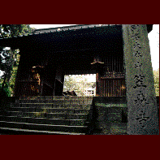

笠森観音/千葉県長南町
切通しの参道を登って行くとカーブの向こうから山門が見えてくる。そしてその向こうには何とも不思議な建物が建っている。
房総半島の内陸部、長南町の笠森観音である。
ここの観音堂は
四方懸造りという希有な構造により特異な姿を晒している。
懸造りとは地盤から柱を立ち上げ、その上に建物を建てる造りのことで、清水寺のいわゆる「清水の舞台」などが有名だ。しかし一般的にこの懸造りとは斜面などに張り出す為に用いる工法なのだが、ここ笠森観音堂のものは
四方懸造り、つまり山の斜面などではなく、四方から長い束柱を建ち上げ、岩峰の頂上にお堂が建っているのだ。地上からお堂の床まで高さ16。空中寺院といった趣である。
何故こんな建物を建てたのか、この寺の縁起を紐解いてみよう。
ここ笠森観音は正式には別格大本山笠森寺といい、その歴史は延暦3年（784年）最澄上人が霊木で十一面観音を刻み山上に安置したことから始まる。その後、長元元年（1028）後一条天皇の勅願で観音堂が建立された。現在の建物は天正から慶長期（16世紀後半）にかけて建てられたものだが、つまり鉛筆のように尖った岩峰の上にある観音さまにお堂を架けてやろう、というのがそもそもの理由だ。最初に本尊ありきなのだ。
それにしても岩峰の殆どに束柱が建っているその姿を見ると、それはまるでクリストが橋や島を布で梱包してしまうように、岩峰が柱で「梱包」されているかのようだ。もはや上にお堂を建てるといった「目的」よりも下の岩峰を柱で覆ってしまうという「手段」のほうがメインなんじゃねえのか、とツッコミを入れたくなるような姿だ。
長く急な階段を登っていく。観音堂の中には立派な厨子があり、丁度そこが岩峰の頂部になっている。たまたま12年に2回という御開帳の時に訪れたので、厨子の扉が開かれていた。これだけ凄いお堂を建てさせた観音様とは一体どんな御顔かと覗き込むと・・・結構ポンチ顔だった。
外の回廊に出る。眼下は国指定天然記念物の自然林だ。樹海の緑が美しい。案外、観音様は口実で、この素晴しい眺めを得るためにこんな手の込んだお堂を建てたのかも知れない、と思える程に。
1997.
珍寺大道場 HOME